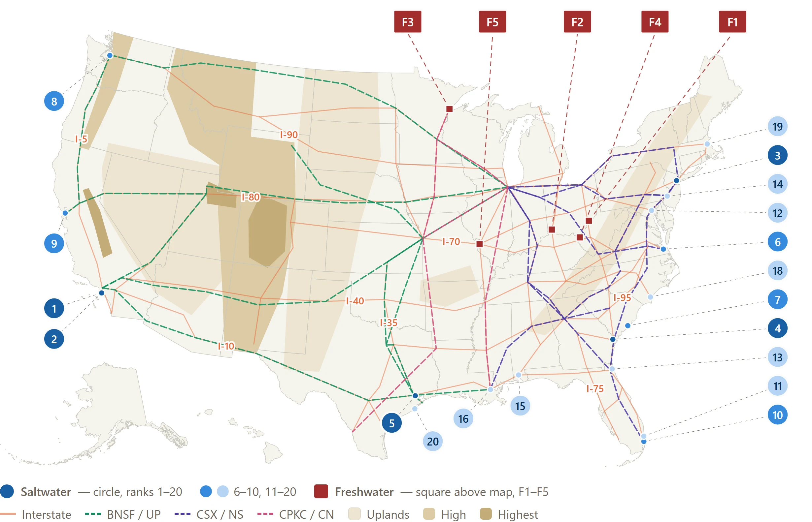

Ports · Rail · Interstates · Relief
Drawable reference map — saltwater ports (1–20), freshwater ports (F1–F5), interstates, Class-I rail, and terrain relief. Waterways omitted.
✏️ Pen
Eraser
Size
4
Undo
Clear
⬇ Save PNG
Tip: your marks persist in this browser until you Clear.
